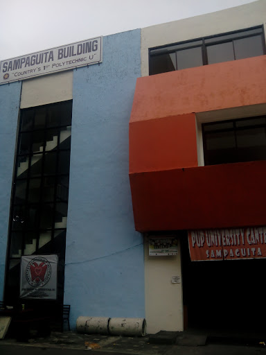

Kilala din sa pangalan na Sampaguita Canteen. an important part of the PUP campus, serving as a food service area, a social gathering spot, and a key contributor to student life. Its accessibility, affordability, and cultural significance make it a beloved and integral part of the daily routines of PUP students and staff.